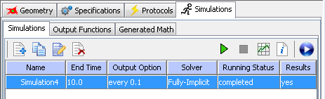

Results from simulations are automatically stored on the remote database server. The Results button becomes active once results are available for a newly run simulation or when a previously run simulation is selected. The results may be reviewed immediately by pressing the Results button on the Simulation panel of the Application dialog. This activates the Simulation Results Viewer. The viewer for results differ for non-spatial and spatial models.

 Simulation Results Button.
Simulation Results Button.
View simulation results by selecting a simulation and pressing the simulation results button. A different results viewer appears for Spatial and Non-spatial(compartmental) results.